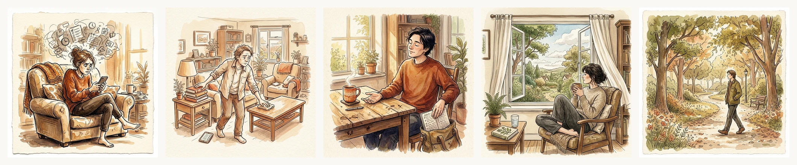
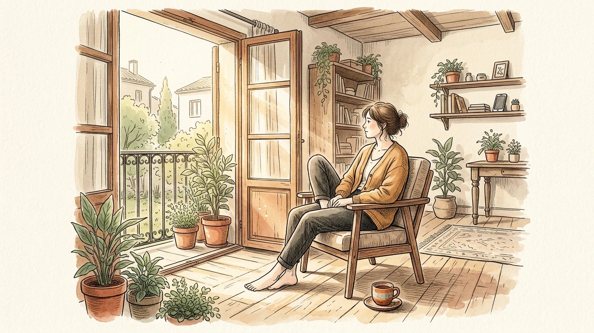

Es sábado por la tarde. No tienes que entrar a trabajar, no hay citas médicas en el calendario y las tareas más urgentes de la casa están resueltas. Tienes por delante tres horas enteras completamente libres. Y, sin embargo, en lugar de respirar aliviado y disfrutar del silencio, te invade una inquietud incómoda en el pecho: sientes que deberías estar aprovechando el tiempo en algo útil.

Te sientas en el sillón dispuesto a descansar, pero a los dos minutos ya estás dando golpecitos impacientes con el pie en el suelo. Miras a tu alrededor y tu cabeza empieza a fabricar obligaciones artificiales de la nada: ordenar una estantería que ya está perfectamente ordenada, responder a correos que pueden esperar sin ningún problema al lunes por la mañana o ponerte a escuchar un pódcast sobre finanzas o desarrollo personal para no tener la sensación de estar tirando la tarde a la basura.
Hemos llegado a un punto en el que el descanso puro, ese rato en el que simplemente existes sin perseguir ningún objetivo concreto, nos asusta de verdad. Nos parece una especie de pecado íntimo o de vagancia encubierta. Nos han educado tan a fondo en la idea de que nuestro valor como personas depende directamente de lo que producimos a lo largo del día que, en cuanto frenamos el motor, aparece la culpa como un juez implacable a pedirnos explicaciones por cada minuto respirado.
Fíjate con atención en lo que hacemos hoy en día cuando decimos que descansamos. Rara vez nos tumbamos en la cama a mirar el techo en calma o a escuchar el ruido de la lluvia contra los cristales. Lo que solemos llamar ocio suele ser solo otra forma de rendimiento con ropa de calle: salir a correr pendientes del reloj inteligente para registrar el ritmo cardíaco, ver una serie con el móvil en la mano consultando opiniones en redes sociales o leer un libro a toda prisa para cumplir con un reto anual de lecturas en una aplicación.
Incluso el autocuidado lo hemos convertido en una lista interminable de tareas pendientes. Hay que meditar quince minutos exactos nada más levantarse, beber dos litros y medio de agua, hacer estiramientos guiados, agradecer el día por escrito y registrar los progresos en una libreta de hábitos. Todo tiene que tener un propósito medible, un resultado visible o una foto que demuestre ante los demás que hemos aprovechado el fin de semana como es debido. Si no hay nada que enseñar o registrar, parece que el tiempo no hubiera existido.
El descanso que necesita justificación previa no es descanso; es solo una pausa obligada entre dos tareas de producción. El descanso verdadero no le rinde cuentas a nadie.
Cuando todo lo que haces tiene que servir obligatoriamente para algo, tu mente nunca llega a desconectar del todo. Se mantiene en un estado de guardia permanente, evaluando en segundo plano si lo que estás haciendo en este preciso instante es lo bastante rentable como para justificar tu existencia. Y esa vigilancia continua, ese no soltar los remos ni cuando estás en la orilla, es precisamente lo que te deja sin aliento y con la sensación de no haber descansado al terminar el domingo por la noche.

Para aprender a no hacer nada sin que te carcoma la mala conciencia no hace falta irse a vivir al campo ni hacer un retiro espiritual de diez días sin hablar. Se trata de algo mucho más humilde y cotidiano: volver a familiarizarse con el aburrimiento y entender que el tiempo no es un recurso comercial que haya que exprimir hasta la última gota para que valga la pena.
Un buen primer paso es concederte pequeños bloques de tiempo sin etiqueta. Prueba a reservar una hora entera un sábado o un domingo por la tarde sin ningún plan preconcebido en la cabeza. Si en esa hora te apetece sentarte junto a una ventana abierta a ver pasar a la gente con una taza tibia entre las manos, perfecto. Si te apetece tumbarte en la alfombra sin música o dar un paseo por tu barrio sin rumbo fijo y sin auriculares puestos, igual de bien. Lo esencial es que ese rato no tenga que dar ningún fruto, ni justificar ningún avance, ni alimentar ninguna meta.
Al principio notarás una resistencia interna casi física. Tu cabeza te susurrará al oído que estás perdiendo el tiempo o que hay mil cosas pendientes por hacer en casa. Es una reacción perfectamente normal: llevas décadas condicionado para reaccionar ante cualquier hueco libre en la agenda como si fuera una avería urgente que hay que reparar de inmediato. Quédate con esa incomodidad dos o tres minutos sin salir corriendo a coger el teléfono. Si no alimentas la prisa, poco a poco verás cómo el ruido mental se va apagando solo.
Si la inercia de estar permanentemente ocupado te cuesta especialmente y notas que sentarte a descansar te genera más agobio que paz, tener un cuaderno cerca puede ser un puente estupendo. Pero no una libreta de listas de tareas interminables ni de proyectos trimestrales, sino un papel en blanco donde volcar todo el ruido que llevas dentro sin juzgarlo.
Escribe dos o tres frases sencillas: «Hoy no voy a solucionar nada más», «Esta tarde es para no hacer nada», o simplemente anota las ideas sueltas que te vienen a la cabeza para sacarlas de allí. Escribirlo a mano ayuda a ponerle un punto y final simbólico a la jornada. Es una manera tranquila de decirle a tu cerebro que ya has cumplido con tu parte del trato y que ahora toca apagar la maquinaria hasta nuevo aviso.
No eres una máquina diseñada para generar resultados constantes las veinticuatro horas del día. Eres una persona de carne y hueso que necesita pausas, ratos muertos y silencios para poder seguir funcionando con sentido y lucidez. El próximo día en el que tengas una tarde libre y sientas la tentación de llenarla de recados absurdos, para en seco. Deja las cosas como están, respira hondo y date el regalo más raro y valioso de nuestro tiempo: el lujo de no hacer absolutamente nada.
Aprende a frenar las vueltas a la cabeza y a tomar decisiones con serenidad gracias a nuestro cuaderno guiado Deja de Darle Vueltas, o pon a prueba tu filtro mental con nuestras herramientas gratuitas.